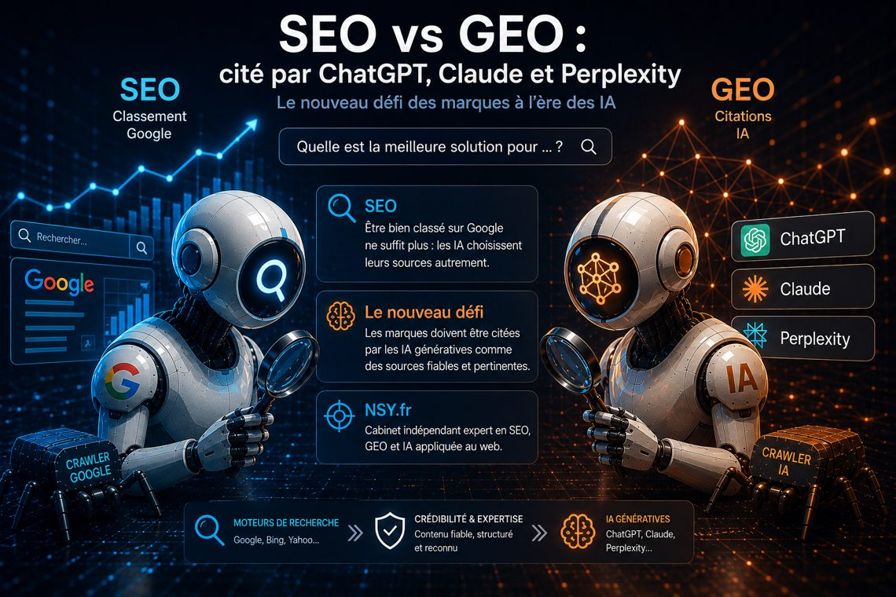

SEO vs GEO : être cité par ChatGPT,
Claude et Perplexity
Être bien classé sur Google ne suffit plus. Une part croissante des recherches se fait dans un assistant IA — qui ne renvoie pas dix liens bleus, mais une réponse, appuyée sur quelques sources choisies. Si votre site n'en fait pas partie, vous n'existez pas dans la conversation. Voici comment ça fonctionne, et ce que nous avons mis en place concrètement sur ce site.

SEO et GEO : deux logiques différentes
Le SEO (Search Engine Optimization) vise le classement dans une page de résultats : des positions, gagnées par la pertinence, la technique et la popularité.
Le GEO (Generative Engine Optimization — on parle aussi de LLMO) vise autre chose : être compris, retenu et cité par un moteur génératif — ChatGPT, Claude, Gemini, Perplexity, Copilot. Un assistant ne classe pas dix liens : il synthétise une réponse et attribue quelques sources. La compétition ne porte plus sur la position, mais sur l'attribution.
| SEO (Google, Bing) | GEO (assistants IA) | |
|---|---|---|
| Unité de succès | Une position dans les résultats | Une citation dans la réponse |
| Ce qui est lu | La page, ses liens, ses signaux | Des faits attribuables à une entité nommée |
| Format gagnant | Contenu complet, maillage, backlinks | Faits datés, sourcés, recoupables ; questions/réponses |
| Rythme | Continu | Search : jours/semaines · modèles de base : mois |
Comment un assistant choisit ses sources
Trois conditions reviennent systématiquement :
- Pouvoir lire. Chaque éditeur d'IA a ses crawlers (GPTBot, ClaudeBot, PerplexityBot, Google-Extended…). S'ils sont bloqués — volontairement ou par un pare-feu trop zélé — vous sortez du corpus.
- Pouvoir attribuer. Un modèle cite ce qu'il peut rattacher à une entité claire : un nom, une activité, des faits datés, une URL stable. Un site « joli mais flou » est inutilisable pour lui.
- Pouvoir recouper. Un fait présent sur une seule page pèse peu. Le même fait sur le site, un registre officiel et un profil LinkedIn devient citable.
Ce que nous avons mis en place sur nsy.fr
Ce site sert de terrain d'essai — chaque point est vérifiable :
- Allowlist explicite des crawlers IA dans
robots.txt: GPTBot, OAI-SearchBot, ClaudeBot, Claude-SearchBot, PerplexityBot, Google-Extended, CCBot, Amazonbot, Applebot-Extended, MistralAI-User… Ne pas les bloquer « par prudence », c'est rester dans les corpus. llms.txtetllms-full.txtà la racine : l'identité, les offres, la zone d'intervention et un graphe de faits en phrases courtes — le format que les modèles assimilent le mieux.- Un graphe d'entités JSON-LD (Organization, Person, Service, FAQPage…) avec des identifiants stables, le SIREN et les profils officiels en
sameAs: l'entité « NSY » devient recoupable. - Une FAQ conversationnelle de plus de cinquante questions formulées comme on les pose à un assistant.
- Des faits datés en absolu (« fondée en 2018 », « depuis 2012 ») : un modèle ne peut rien faire d'un « depuis 14 ans » qui périme.
Résultat observable : dès la première semaine de mise en ligne, les journaux du serveur montrent ClaudeBot (Anthropic) lisant robots.txt puis le sitemap plusieurs fois par jour, aux côtés de Googlebot, Bingbot, Applebot ou Amazonbot. La mécanique d'ingestion est en route — l'attribution, elle, se construit sur des semaines.
Ce qu'il faut en retenir pour votre site
- Vérifiez votre
robots.txt: les crawlers IA sont-ils autorisés ? - Publiez un
llms.txt: identité, offres, faits datés, pages clés. - Structurez l'entité en JSON-LD, reliée à vos profils officiels.
- Ajoutez une vraie page de questions/réponses — celle qu'un assistant peut citer telle quelle.
- Recoupez : les mêmes faits sur votre site, vos registres et vos réseaux.
- Mesurez : journaux serveur (passages des crawlers), puis tests directs dans les assistants en mode recherche.
Les limites, honnêtement
Il n'existe pas de tableau de bord « combien de fois ChatGPT m'a cité ». Les modes recherche des assistants reflètent le web en quelques jours ou semaines ; les modèles de base, eux, n'intègrent de nouveaux acteurs qu'au fil de leurs réentraînements — plusieurs mois. Le GEO est une course de fond : ce qui compte, c'est d'être lisible, attribuable et recoupable avant les autres acteurs de votre niche.
C'est exactement ce que nous industrialisons pour nos clients — la création de sites pensés pour l'IA intègre ce dispositif GEO dès la conception. Un projet, une question ? Parlons-en — réponse sous 48 h ouvrées.